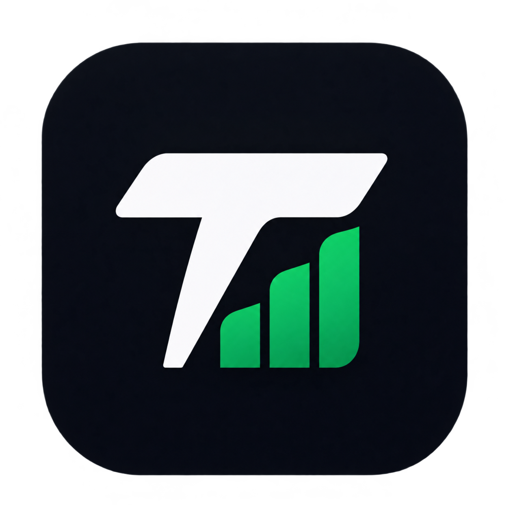

دیتابیس بورس
پایپلاین فعلی و اطلاعات نمادها، قیمتها، سهامداران و مالکیت؛ بدون ذخیرهٔ هویت یا اطلاعات مالی کاربران.
موجود · مستقل · Read-only
تلومبرگ TLOOMBERG · SAAS FOUNDATIONپایهگذاری حسابهای کاربری، نقشها، اشتراکها، پرداخت، کیف پول، دعوت دوستان، پشتیبانی و تحلیل رفتار کاربران؛ با حفظ استقلال کامل دیتابیس اطلاعات بورس.
پایپلاین فعلی و اطلاعات نمادها، قیمتها، سهامداران و مالکیت؛ بدون ذخیرهٔ هویت یا اطلاعات مالی کاربران.
موجود · مستقل · Read-onlyکاربران، روشهای ورود، نشستها، نقشها، اشتراک، پرداخت، کیف پول، دعوت و تیکتها در PostgreSQL مستقل.
اسکیما و طرح اولیه ایجاد شدهرویدادهای مجاز کلیک، مسیر صفحه، عمق اسکرول و زمان فعال؛ با رضایت کاربر و بدون ثبت ورودیهای خصوصی.
مدل داده تعریف شدهشناسهٔ یکتای کاربر، Username، هویتهای قابل اتصال، نشستها و نقشهای سوپرادمین، ادمین، پشتیبانی و کاربر.
طرح یکماهه ۸۹۹٬۰۰۰ تومان و سهماهه ۲٬۴۹۹٬۰۰۰ تومان؛ ساختار مستقل برای تلاش پرداخت و رویدادهای درگاه.
تفکیک اعتبار نقدی و هدیه، دفتر کل غیرقابلویرایش و رزرو موجودی برای برداشتهای در انتظار.
کد دعوت یکتا، ثبت پاداش ۱۰۰ هزار تومانی و صف ارسال پیامک؛ با جلوگیری از ثبت پاداش تکراری.
ساختار تیکت، پیامها، یادداشت داخلی پشتیبان و پرسشهای متداول.
ثبت فعالیت مدیران، رضایت تحلیل رفتار، شناسهٔ رویداد و مرزبندی اطلاعات حساس.
در bucket نقدی نگهداری میشود و فقط همین بخش، پس از کسر برداشتهای رزروشده، مبنای سقف برداشت است.
قابل برداشت طبق ضوابطدر bucket هدیه ذخیره میشود، برای خرید خدمات قابل مصرف است اما هرگز به سقف برداشت اضافه نمیشود.
غیرقابل برداشتجزئیات مرزبندی دیتابیسها، سیاست کیف پول، نقشها، چرخهٔ پرداخت و نقشهٔ راه در مستندات توسعه ثبت شدهاند.